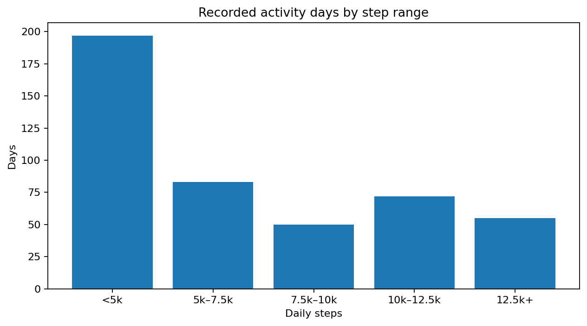
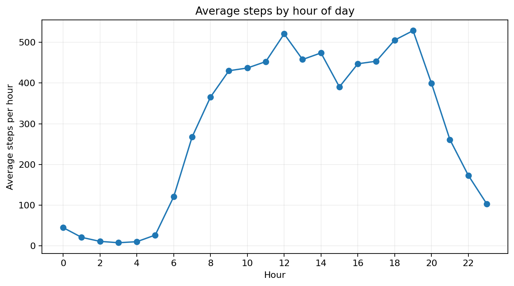
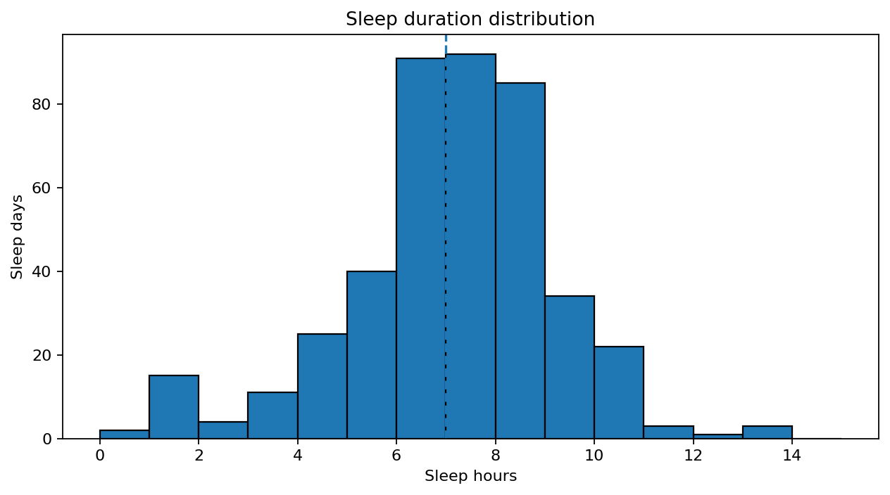
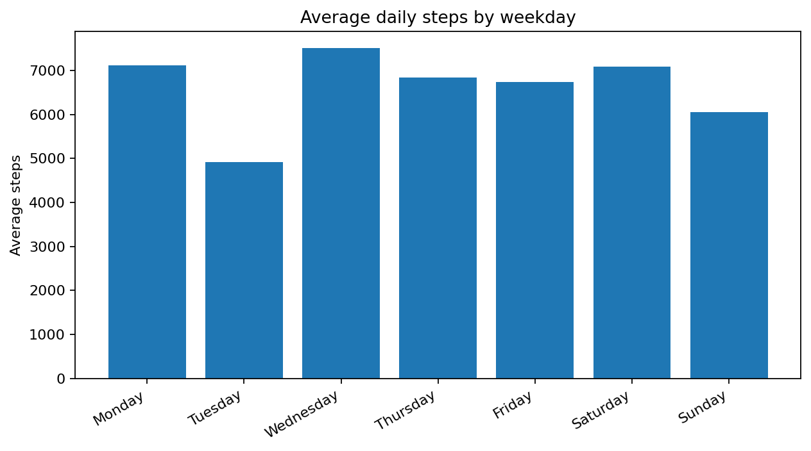

My approach
I enjoy taking a business problem, organizing the data behind it, finding the important patterns, and communicating the result in a way that a decision-maker can actually use.
DATA • OPERATIONS • BUSINESS INSIGHTS
I use data cleaning, analysis, visualization, and business storytelling to turn messy information into practical insights.
ABOUT ME
I enjoy taking a business problem, organizing the data behind it, finding the important patterns, and communicating the result in a way that a decision-maker can actually use.
This portfolio documents my transition into data and operations analytics through practical projects involving dashboards, process analysis, project performance, and business recommendations.
FEATURED PROJECTS
Analyzed Fitbit activity, sleep, and time-of-day behavior to identify trends and translate them into marketing and product recommendations for the Bellabeat App.
Operational KPI dashboard focused on performance monitoring, trends, exceptions, and decision support.
Project analytics focused on milestones, timelines, workload, delivery performance, and project risk visibility.
CASE STUDY • BELLABEAT APP
What trends appear in smart-device usage, how might they apply to Bellabeat customers, and how could they inform marketing strategy?
Bellabeat App — a natural fit for connecting activity, sleep, goals, and personalized wellness content.
The supplied files include daily activity, minute sleep, hourly steps, weight logs, and minute calories. Dates were standardized, duplicates checked, missingness documented, and minute-level data aggregated for analysis.
The dataset is small and historical. Findings are directional and should not be treated as representative of all Bellabeat customers.
KEY FINDINGS
197 of 457 recorded days were below 5,000 steps. Only 127 days reached at least 10,000 steps.

Average hourly steps peaked around 7 PM, with another strong period around 12 PM.

The sleep file covers 23 users. Average sleep duration was about 7.1 hours per sleep day; 97 sleep days were below 6 hours.

Average steps were fairly similar across weekdays and weekends, so time-of-day context is more useful than assuming a simple weekday/weekend split.

ACT
Use achievable movement prompts and progress feedback instead of assuming every user wants an intensive fitness goal.
Experiment with relevant content around lunch and early evening, when activity was highest in this sample.
Let users explore their own patterns across movement and sleep without making simplistic population-wide health claims.
SKILLS
RESUME & WORK
CONTACT
Shakara Alceus
Shakaraalceus.pm@proton.me
LinkedIn